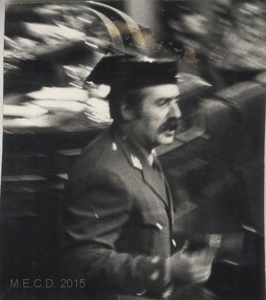

Guardias civiles asaltan el Congreso y retienen al Gobierno y a los diputados
El teniente coronel Tejero irrumpió pistola en mano en plena investidura de Calvo-Sotelo y mantiene secuestrada a la Cámara. En Valencia, Milans del Bosch sacó los tanques a la calle. Pasada la una de la madrugada, el Rey ordenó por televisión defender el orden constitucional.

Eran las seis y veintitrés de la tarde y el secretario cantaba la votación de investidura del señor Calvo-Sotelo; acababa de pronunciar el nombre del diputado Núñez Encabo cuando las puertas del hemiciclo se abrieron de golpe. Un teniente coronel de la Guardia Civil, pistola en mano, subió a la tribuna gritando «¡Quieto todo el mundo!», seguido de guardias con metralletas. Sonaron ráfagas contra el techo, cayó yeso sobre los escaños y los diputados, el Gobierno en pleno entre ellos, se echaron al suelo. Los micrófonos de la radio, abiertos, transmitieron en directo el estrépito: España entera oyó secuestrar a su Parlamento.
Tres hombres no se agacharon, y el país lo supo al instante. El presidente dimisionario, don Adolfo Suárez, permaneció sentado en su escaño, cruzado de brazos. El teniente general Gutiérrez Mellado, con sus sesenta y ocho años, se levantó a encararse con los asaltantes para exigirles la rendición; los guardias lo zarandearon sin lograr derribarlo, y volvió a su sitio por su propio pie. Y el diputado comunista don Santiago Carrillo siguió fumando en su asiento, sin bajar al suelo. El resto de la Cámara pasó la tarde y la noche encañonada, mientras el teniente coronel Tejero anunciaba la llegada de una autoridad militar que nunca acababa de llegar.
El asalto no venía solo. A media tarde, el capitán general de Valencia, don Jaime Milans del Bosch, sacó los carros de combate a las calles y publicó un bando declarando el estado de excepción en la región. Durante horas se ignoró qué harían las restantes capitanías, y el silencio de los cuarteles fue el sonido más inquietante de la noche. Con el Gobierno secuestrado, los subsecretarios se constituyeron en gabinete de emergencia. Los rumores de sables venían sonando desde hace meses, agravados desde la dimisión del señor Suárez a fines de enero; lo de hoy les pone rostro, tricornio y hora exacta.
Ha sido la noche de los transistores. Las calles se vaciaron temprano y España entera se reunió alrededor de las radios, que narraron hora a hora el cerco del Congreso y las gestiones que se adivinaban detrás. Se dice que en algunas sedes de partidos y sindicatos se quemaron esta noche listas de afiliados, por lo que pudiera pasar; se dice también que las emisoras recibieron llamadas de ciudadanos ofreciéndose para lo que hiciera falta. Pasada la una y cuarto de la madrugada, el rey don Juan Carlos, con uniforme de capitán general, ordenó por televisión a las Fuerzas Armadas mantener el orden constitucional y advirtió que la Corona no tolerará la interrupción de la democracia por la fuerza.
Cerramos esta edición de madrugada, con la noticia a medio hacer, y preferimos decirlo a fingir que conocemos su final. Tras el mensaje del Rey, el golpe parece desinflarse: en Valencia se anuncia la retirada de los carros y ninguna otra capitanía se ha sumado a la asonada. Pero a esta hora los diputados siguen retenidos en sus escaños, encañonados por los asaltantes, y nadie puede jurar cómo terminará el encierro. El lector sabrá al despertar lo que esta redacción ignora al cerrar. Solo consignamos lo cierto: la democracia española ha pasado esta noche por el filo, y la mañana dirá de qué lado cae.